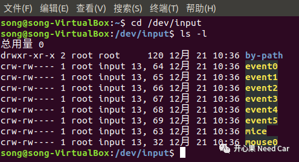
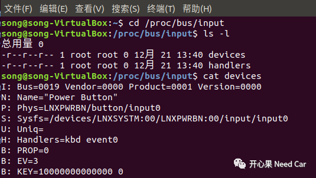

需求：基于英飞凌OKT507，通过按键模拟车锁状态。本文聊一聊如何获取OKT507开发板的按键状态。使用的操作系统：Ubuntu。文末有彩蛋！

如何获取设备事件
在Linux中，设备事件存放在设备文件中，通过读取设备文件可以获取设备状态信息（一切皆文件）。因此，如果想获取按键的状态信息，首先需要找到按键设备对应的设备文件位置。
分别输入如下指令：
cd /dev/inputls -l
指令执行后，列出所有的设备文件。


确定设备所在设备文件
知道了设备文件以后，如何知道按键对应的设备文件？
分别输入如下指令：
cd /proc/bus/inputls -lcat devices
获取如下信息（未完全展开），如下可以看出event0设备文件对应Power Button，即供电按键的信息。以此类推可以找到OKT507开发板目标按键的设备文件。


捕获按键信息代码示例
在获取事件信息之前，需要先了解事件数据的结构。linux/input.h文件定义数据结构如下所示：
struct input_event {struct timeval time;__u16 type;__u16 code;__s32 value;}
本例在获取按键信息时关注type、code和value这三个元素。对于按键事件，value = 1表示按键按下，反之按键释放；code用来区分所使用的按键；type表示事件类型，其中EV_KEY表示按键事件，键盘按键，鼠标键等事件。
示例：
#include <stdio.h>#include <linux/input.h>#include <stdlib.h>#include <sys/types.h>#include <sys/stat.h>#include <fcntl.h>#include <sys/time.h>#include <limits.h>#include <unistd.h>#include <signal.h>/* 目标按键在 vent0设备文件 */#define DEV_OKT507_BOARD_EVENT_PATH "/dev/input/event0"static int keys_fd = 0;uint32_t get_KeyBoardSts(const char * event_file, uint8_t* const _keySts, uint8_t* const _keyFlag){int code = 0;struct input_event data;keys_fd = open(DEV_OKT507_BOARD_EVENT_PATH, O_RDONLY);if(keys_fd <= 0){printf("open %s error!\n", DEV_OKT507_BOARD_EVENT_PATH);return -1;}read(keys_fd, &data, sizeof(data));*_keySts = data.value;*_keyFlag = data.code;if(data.type == EV_KEY && data.value == 1){printf("key %d pressed\n", data.code);}else if(data.type == EV_KEY && data.value == 0){printf("key %d releaseed\n", data.code);}close(keys_fd);return 0;}
细节点1
static void keyOpt(void){uint8_t its_data[1] = {0x00};uint8_t keySts;/* test */// keySts = KEY_115_STS;// its_data[0] = 0x01;while (true) {keySts = 0x00;(void)get_KeyBoardSts(DEV_OKT507_BOARD_EVENT_PATH, its_data, &keySts);if(keySts == KEY_115_STS){/*do somenthing*/}else if(keySts == KEY_114_STS){/*do somenthing*/}}}int main(int argc, char **argv) {keyOpt();return 0;}
往期精彩推荐：